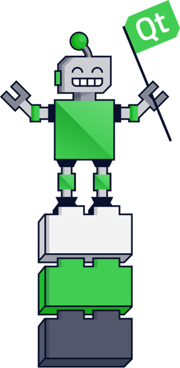

Mastering
Qt for Python
in 20 minutes
Dr. Cristián Maureira-Fredes
Software Engineer @ TQtC

About
Dr. Cristián Maureira-Fredes
Software Engineer @ The Qt Company
@cmaureir


What do we have?
- General purpose
- Multi paradigm
- Statically typed
- Compiled
- Provides low-level memory manipulation

What are we getting?

- General purpose
- Multi paradigm
- Dynamically typed
- Interpreted
- Automatic memory management
- Code readability
#include <stdio.h>
#define o stdout
#define p fputs
int main(_){int*I=&_,_I=2113,l1=3271;_=14557;_I*=503;
_<<=3;_*='=';_I<<=0==0;_I=7*'Y'*853<<2;
p(I,o);I=&_I;p(I,o);I=&_;
_+= l1*11*11;
_I += 0xF5<<8;p(I,o);I=&_I;p(I,o);}
...to get
$ ./a.out
Hello World!
(Submitted by vsz on codegolf.stackexchange.com)
#include <iostream>
using namespace std;
int main() {
cout << "Hello Qt World Summit!";
return 0;
}
template <bool C, typename TR, typename FR>
class if_;
template <typename TR, typename FR>
struct if_<true, TR, FR>{ typedef TR result;};
template <typename TR, typename FR>
struct if_<false, TR, FR> { typedef FR result;};
int main() {
typename if_<true, int, void*>::result n(3);
typename if_<false, int, void*>::result p(&n);
typedef typename if_<(sizeof(void *) > sizeof(uint32_t)), uint64_t, uint32_t>::result i_ptr_t;
i_ptr_t c_p = reinterpret_cast<i_ptr_t>(p);
}
Compile-time if https://en.wikibooks.org/wiki/C%2B%2B_Programming/Templates/Template_Meta-Programming
(╯°□°）╯︵ ┻━┻
Why Python?
import antigravity

(Source: https://www.xkcd.com/353/)
StackOverflow insights 2018
7th
Most Popular Languages3rd
Most loved languages1st
Most wanted languagesTiobe Index
Oct. 2018
4th
Linux Journal
2018
1st
The Pythonic deal
- Fast prototyping
- No memory management
- High level native types
- Easy integration with the current hot-topics:
- Task automation, Deep and Machine learning, Data analysis, Artificial intelligence, etc
We are officially exposing Qt to Python
The story
2008
Qt4Development
(PySide)
2016
Backto the
Qt Project
2015
Qt5Port
(PySide2)
2018
Released(Qt for Python)
How do we do it?

How does PySide2 look like?
Hello World
import sys
from PySide2.QtWidgets import QApplication, QLabel
# Qt Application
app = QApplication([])
# Qt Widget
label = QLabel("Hello World!")
label.show()
# Executing app
sys.exit(app.exec_())
Coding style
- Python uses
underscore_names - Qt uses
camelCaseNames
ಠ_ಠ
Coding style
- Python uses
underscore_names - Qt uses
camelCaseNames - Using both styles:
title_label.setText("Hello")- Keep the Qt API
- Easy to move from C++ to Python
- Qt documentation
How does Qt play with Python?
Install
pip install PySide2
٩( ᐛ )و
Examples!
What's next?
Implementation
- Smoother module interaction (SciPy suite)
- Application deployment
- Static type checker (mypy).
Integration
- Improve the QtCreator experience
- Embedded systems
- Mobile (Android/iOS)
What do you need?
we are community driven.Release details
- Python 2.7, 3.5+
- Removed TP flag for Qt 5.12 (12.2018)
- Commercial and Open Source (GPL2/LGPL3) licenses
- 5.12.1 is out!
¯\_(ツ)_/¯ 2020
vs
+
Q&A
#qt-pyside on Freenode
Mailing list: bit.ly/pyside2
qt.io/qt-for-python
pyside.org
@cmaureir